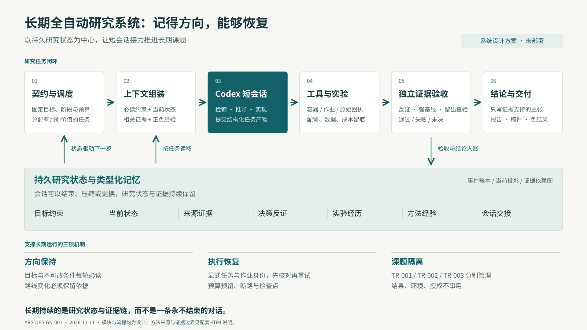

01
控制平面
保存课题目标，安排下一项有价值且可执行的动作。
- Topic Registry：课题与路径登记，引用现有 topics.json
- Contract / Capability Registry：范围、固定条件、既有授权与资源上限
- Scheduler：任务依赖、优先级、租约、公平调度和停止规则
进程独立于模型会话和研究容器；每个课题只有一个权威写入者。
DURABLE RESEARCH, REPLACEABLE SESSIONS
以可恢复的研究状态为中心，让短会话接力推进长期课题
DIAGRAM

汇报讲解：系统先把研究目标与边界写成契约，再由短会话完成具体任务。经过独立验收的产物、证据和失败原因写入持久记忆，驱动下一轮任务；会话更换不会重新定义研究方向。
OVERVIEW
推荐架构：确定性控制器 + 可替换的 Codex 短会话执行器 + 持久事件账本 + 类型化研究记忆 + 独立证据验收。
长期连续的是课题、任务图和证据链。会话可结束、压缩、失效或更换模型，下一会话从外部状态恢复。
全自动的操作含义：在已经确定的课题范围、资源和授权内自主推进、排错、反证和写作；只有真正缺失的资源、冲突指令或范围扩张需要用户补充。
历史记录是设计输入、初始记忆候选和时间顺序回放材料。它不是已经正确标注的真值，也不能替代实验原始产物。
| 约定 | 执行规则 |
|---|---|
| I01 · 课题身份不能靠语义猜测 | 每个任务、记忆、运行、产物和模型会话绑定 topic_id；未指定且无法从活动任务确定时只做归属分析。跨课题只共享经审查的方法经验，结果和授权不互通。 |
| I02 · 固定研究目标，允许有依据地改路线 | contract_version 固定任务语义、指标和准入条件；候选路线能依据反证变更。契约范围内的转向自动留痕执行，改变目标或评价器需匹配既有授权或形成明确的范围变更。 |
| I03 · 历史保留，当前状态唯一 | 追加事件不覆盖历史；当前状态是带事件游标和版本的派生视图。Markdown、HTML和汇报图都由状态生成，不允许分别成为事实源。 |
| I04 · 证据不随摘要升级 | 用户确认、外部文献、工具观察、推导、假设和已验收实验分开记录。助手总结、模型自评和引用次数不能提高证据等级。 |
| I05 · 先核对作业，再决定重试 | 超时、失联或控制器崩溃后先查 operation_id 和持久作业回执。状态不明记 UNKNOWN 并占用成本预留，禁止直接重复提交付费调用或训练。 |
| I06 · 恢复不等于原样复现实验 | 控制器恢复保证任务状态一致；实验 checkpoint 是否覆盖 RNG、优化器、环境和异步队列单独验收。非确定性执行保留容差和失效范围。 |
| I07 · 失败可结束分支，不可被抹掉 | 基础设施失败、实现错误、统计未决、方法无收益和反例分别归因；只有在相应条件下的证据才用于否决假设。无有效贡献也是允许的研究结局。 |
| I08 · 模型不能修改控制平面 | 执行器提交候选任务、证据与状态补丁；确定性控制器校验范围、契约哈希、预算、租约和证据后提交。执行器不能自行扩大授权、改评分器、解封留出集或编辑当前状态数据库。 |
ARCHITECTURE
第一版可用一个执行器顺序承担不同角色。系统耐久性由控制平面与账本提供，多智能体数量本身不是目标。
保存课题目标，安排下一项有价值且可执行的动作。
进程独立于模型会话和研究容器；每个课题只有一个权威写入者。
保留研究问题、决策理由和证据依赖，按当前任务组装上下文。
SQLite 事件表是第一版事实源，JSONL 为导出备份；FTS5 / 向量 / 图索引均可重建。
完成限定任务：阅读、推导、提出竞争解释、写代码或撰稿。
第一版可顺序使用单个 Codex 执行器扮演不同角色；角色分离不等于独立证据，多智能体并行不是前置条件。
把训练、仿真、搜索和文件操作变成可查状态的活动。
容器只负责执行环境；宿主路径、网络、算力和凭据仍需真实隔离。仅创建目录或编辑器工作区不能替代隔离。
判断产物是否支持当前范围的主张。
LLM 批评只是候选意见；机械通过不代表科学正确。需要时用独立语义实现、证明检查或人工学术判断。
随时看清目标、进度、否决理由、费用和下一步。
显示最后同步时间和事件游标；不把过期页面或示意数字伪装成实时状态。
MEMORY
外部长期记忆与本轮上下文分开；摘要可以重写，有效约束和原始证据不能随摘要消失。
| 记忆类型 | 保存什么 | 怎样更新 | 何时读取 |
|---|---|---|---|
| 目标与约束 | 研究问题、原任务定义、固定指标、用户偏好及获准范围。 | 仅从明确指令或经核对的契约产生；语义提取先作为候选，确定性字段经核对后投影。 | 每次启动必读，不能因相似度低被排除。 |
| 当前工作状态 | 研究阶段、当前候选、已完成与未决任务、下一步、运行ID和剩余资源。 | 控制器按事件重建；更新需 compare-and-swap 的旧版本匹配。 | 每次任务领取与提交前读取最新版本。 |
| 来源与科学主张 | 文献版本、章节/PDF页序/可见页码，推导假设，实验范围与可支持的主张。 | 保存原始来源引用及证据类型；摘要层阅读不能标成全文排除。 | 按 claim_id 与依赖边取回，必要时展开到原文或原始结果。 |
| 决策与反证 | 选择或淘汰的候选、竞争解释、所依据的证据、重新开启条件。 | 每次关键决策追加；更改结论使用 supersedes，保留旧理由。 | 提出相似候选、路线切换、阶段结束时强制查重。 |
| 实验与运行经历 | 配置/代码/数据/评价器哈希、环境、种子、作业状态、成本、验收和失败归因。 | 工具回执先入账，分析后追加解释；计划与真实运行记录用不同类型。 | 运行恢复、结果比较、论文数字引用时按 run_id 精确读取。 |
| 可复用方法经验 | 检索策略、构建修复、实验设计和已验证的操作经验及适用前提。 | 先经课题内复验，再成为候选经验；跨课题共享需去除私有结论并检查适用前提。 | 先过 topic / type / 有效期过滤，再做检索；成功经验与失败经验一起提供。 |
| 会话交接 | 目标、已做动作、证据ID、失败与未决、下一步及可回读的历史片段句柄。 | 正常结束、重大决策、任务边界或上下文压力时生成；不替代事件入账。 | 新会话先比对事件游标；过期交接只作历史，必须追加最新变更。 |
memory_id, topic_id, type, statement, epistemic_status, source_refs, source_hashes, recorded_at, effective_from, effective_until, contract_version, supersedes, depends_on, scope, verification_status
HISTORY
历史尤其适合恢复“当时为何如此决策”，并构造不泄漏未来答案的记忆验收。它不自动证明历史助手的结论正确。
当前历史同时用于需求挖掘、记忆候选初始化和按时间顺序验收；不训练模型，不把全部会话复制入提示词。
原始会话和细粒度片段留在本地忽略目录；仓库只保存经整理的设计案例、必要定位与快照清单。原始附件若缺失须标缺失，不能从相邻文字补造内容。
匹配session_meta.cwd为仓库根或其子目录；读取前6行元数据发现，不扫描其他会话正文。
仅非空response_item/message/user可见文本；排除AGENTS和环境注入。按文件事件计数，未把它视为语义去重后的独立指令数。压缩事件只计数，未读取其摘要内容。
WORKFLOW
| 阶段 | 做什么 | 退出条件 |
|---|---|---|
| 研究契约 | 确定研究对象、已完成成果、开放问题、固定定义、允许动作和总资源。 | 契约字段完整、来源可追踪、当前动作在有效范围内；只因任务缺少必要字段才等待补充。 |
| 证据与最近邻 | 建立检索式、版本去重、章节/页序证据卡；保留支持与反对来源及阅读深度。 | 关键主张有直接来源；记录检索截止和覆盖缺口。新颖性不足时主动收缩候选，不把未检出当首次。 |
| 候选与反证 | 在固定任务内形成有限候选树；每项记录机制、预测、强近邻、竞争解释、否决条件和最低判别实验。 | 至少有可区分的预测和相应对照；无候选达到门槛可以完成负面研究记录。 |
| 冻结判别协议 | 固定基线、划分、指标、统计单位、最小有意义差异、成本及停止规则。 | 数据隔离、评价口径和总预算可检查；实验类与综述类采用不同准入清单。 |
| 受限实现与验收 | 在隔离工作树/容器里实现最小改动，先核对环境、语义、评价器和已知答案。 | 实现和评价口径可复跑；没有有效实现只记录工程失败，不能据此宣告假设错误。 |
| 开发与诊断 | 按预定预算检查机制是否存在、排除混杂，比较同标签/同预算强对照。 | 达到继续、收缩、无收益或未决条件；追加预算仅在预先允许范围内。 |
| 独立确认 | 冻结候选与协议，独立种子/环境/留出数据复验；适用时采用独立评价器或语义重构。 | 确认结果只用于预定主张；失败后如重新搜索则开启新版本，已见留出不再称盲测。 |
| 证据限定的写作 | 每段主要主张绑定来源或run_id；区分原论文结果、本项目结果、推导和计划。 | 引用、数字、图表、结论范围与编译/阅读交付通过检查；学术正确性仍受证据覆盖限制。 |
| 归档或转向 | 封存契约、候选、全部失败、环境、原始回执、成本、主张清单与可复跑命令。 | 交付supported_under_scope、no_supported_claim或明确的未决报告；不以录用或漂亮分数作为唯一结束条件。 |
| 运行状态 | 含义 |
|---|---|
| READY | 任务前置条件满足，等待调度 |
| RUNNING | 持有效租约执行，持续记录作业回执 |
| WAITING_EXTERNAL | 缺必要资源/外部事件，保留唤醒条件；继续不依赖它的任务 |
| RECONCILING | 崩溃、未知作业或状态冲突，先核对现实执行状态 |
| QUARANTINED | 产物/契约/来源异常，相关动作暂不准入 |
| STOPPED_BUDGET | 资源达到上限，归档当前结果和未完成项 |
| STOPPED_USER | 用户停止；取消未启动任务并按契约处理在途作业 |
| COMPLETED | 本轮课题目标已按退出条件处理，含无支持贡献的结局 |
第一版用可解释规则：先满足必需证据/阻断任务，再按预先记录的判别价值与估计成本排序；同一假设先做最小判别，再做增强机制。设置候选上限、每分支预算与反证任务，避免无限局部调参。不得把主观LLM创新评分当科学价值真值。
本机最小验证已完成；课程算法收益与服务器训练未完成。
保留原UCS语义与D/F/η/χ，具体模型按后续讨论确定。
先导入当前验收回执与待核对指标；新的服务器训练须匹配其专属授权。
用户已授权仿真研究，README记录旋转先导已完成；严格认证和留出等仍待开展。
bearing/里程计目标，先仿真、实机后置；不能继承TR-001的训练限制或预算。
导入实际先导回执和有效仿真范围；按现有授权继续合规任务，无需因旧README历史条目再次求批。
综述核心内容撰写已获授权；README记录XeLaTeX依赖缺失与独立复核缺口。
几何表征与规划综述，目标《自动化学报》，引用和图表须由系统先行核验。
以survey.json为内容源，维护检索/纳入/证据编码与主张依赖；人工后审不豁免自动核验。
主张状态：proposed、supported_under_scope、contradicted_under_scope、unresolved、withdrawn、superseded；证据有效性与运行状态另存。发现来源问题先needs_recheck，不能直接把无效证据等同反命题成立。
综述可跳过模型训练阶段，但不能跳过检索记录、版本去重、纳入排除、主题覆盖、强近邻比较、逐主张支持与引用真实性验收。双人/独立编码尚未执行时如实标明。
推导保存假设、量纲、定义、引理依赖与反例；符号检查、数值小例、完整证明和形式化核验分别标注，不能相互冒充。
RECOVERY
任务重放只重建状态。外部调用与训练是否已经发生，必须用持久回执和 operation_id 核对。
产物落盘但未入账形成孤儿对象，由GC按保留期处理；事件已提交但页面未生成时重建投影。外部任务提交与本地事务无法天然原子化，必须使用operation_id、outbox、适配器去重及状态核对。
撤销令带topic、run及生效时间；不再派发新任务。对在途作业执行预定取消/保存边界，记录取消请求与完成回执。用户停止不能自动被预算重置或计时器解除。
| 问题 | 设计 |
|---|---|
| 持久调度 | 宿主systemd或等价进程管理守护控制器；SQLite仅位于本地可靠磁盘，单写者事务与备份。需要跨主机活动、高并发或可靠长计时器时再接Temporal，不在共享网络盘多进程写SQLite。 |
| 语义重放 | 重放事件只重建状态，不再次调用模型或提交实验。LLM与外部作业结果存为活动回执；重放不能假装随机研究过程可确定重现。 |
| 重复与失联 | 相同逻辑动作共享operation_id；查询持久job_id、回执和资源占用后恢复。在外部系统不支持幂等或查询时，标UNKNOWN，不能承诺exactly-once外部副作用。 |
| 并发与孤儿进程 | 每课题单写者，任务有租约、续租和递增fencing_token；旧worker恢复后提交被拒。进程/容器标owner和run_id，清理前核对所有权，避免杀掉其他会话任务。 |
| 仓库与环境 | 研究修改采用课题worktree/分支及容器；冻结基础commit和必要依赖。当前未提交改动单独列清单，不以当前脏目录直接创建可复现基线。容器限制挂载和资源，系统账本不可写。 |
| 预算 | 按主题/阶段/活动预留再结算；累计token、费用、GPU/CPU时间、环境交互、失败重试和人工介入。预留+已消耗达到限额则停止派发，UNKNOWN保留预留。运行时限与单作业硬限制由工具层实施，模型自报仅补充。账号若不提供逐次费用回执，金额标未知或明确标估算，改用可观测token、时间及配额限制，不伪造实付费用。 |
| 故障恢复 | 区分网络/限流/磁盘满/依赖/代码/科学失败，分别有重试上限与退避。相同错误连续重复或无状态进展触发断路与重新诊断，不能无限付费自修。预算内切换可用任务，不能绕过失败门禁。 |
| 可观测性与备份 | 每次阶段变更、重要决策和恢复写事件与状态快照；记录最后心跳、当前作业、事件游标、费用和未决项。定期一致性备份事件库及内容寻址产物，恢复演练包含索引全损后重建。 |
| 外部资料与凭据 | 论文、网页、README及历史助手文本作为数据，不能改控制策略。模型访问与研究执行环境分离，凭据不进入实验容器和可上传回执；论文/PDF原件继续遵守本地忽略边界。 |
| 公开动作 | 写作、编译、证据报告可在既有范围内自动完成；发送邮件、公开发布、投稿及范围外远程操作按明确授权执行。既有有效授权无需重复询问，本轮设计不会自行开启这些动作。 |
INTERFACES
| 接口草案 | 职责 |
|---|---|
| Controller.claim_task(topic_id, expected_version) | 返回租约、fencing_token与TaskEnvelope；没有任务时返回原因和唤醒条件 |
| Memory.assemble(task_id, cursor, token_limit) | 返回固定约束、相关证据、失败记忆、引用句柄和冲突清单 |
| Executor.start / query / cancel(operation_id) | 显式会话ID/作业ID、状态、费用和产物；不能依赖--last定位 |
| Verifier.check(task_id, artifacts, protocol_hash) | 返回三值验收、覆盖范围、评价器哈希与依赖引用 |
| Ledger.commit(result, expected_version, fencing_token) | 原子追加事件与更新投影；失败提交不修改研究状态 |
| Renderer.build(topic_id, cursor) | 只读生成README、HTML与汇报图，标明游标与最后更新时间 |
以下为接口示例，DEMO标识和版本号不是研究运行或真实预算。输出结构校验不等于科学正确。
{
"example_only": true,
"task_id": "DEMO-TASK-001",
"topic_id": "TR-001",
"phase": "evidence",
"contract_version": "DEMO-CONTRACT-v1",
"contract_hash": "sha256:由实际契约计算",
"state_version": 17,
"snapshot_cursor": 108,
"operation_id": "DEMO-OP-001",
"fencing_token": 4,
"objective": "核对一个候选创新与最近邻的机制差异",
"inputs": [
"claim:DEMO-C1",
"source:DEMO-S1"
],
"editable_scope": [
"任务专属产物目录"
],
"capability_refs": [
"经核对的只读文献检索范围"
],
"budget_ref": "必须引用真实已核定资源条目，不能以本例预算执行",
"acceptance": [
"逐主张来源与阅读深度",
"竞争解释与未决项"
],
"stop_if": [
"契约/状态版本变化",
"资源预留不足",
"必要来源缺失"
]
}{
"example_only": true,
"task_id": "DEMO-TASK-001",
"topic_id": "TR-001",
"operation_id": "DEMO-OP-001",
"status": "UNRESOLVED",
"artifact_refs": [
"artifact:DEMO-A1"
],
"observations": [
{
"type": "literature_claim",
"source_ref": "source:DEMO-S1",
"verification": "摘要级，不能排除全文重合"
}
],
"proposed_memory_refs": [
"candidate-memory:DEMO-M1"
],
"actual_cost_ref": "receipt:DEMO-R1",
"next_proposal": "补读相关方法节后再判断",
"state_patch": "只能建议；控制器验收后提交"
}ACCEPTANCE
以下全部是拟议系统验收，尚未运行；页面交互演练不是模型或控制器的测试结果。
| 验收轨道 | 协议 | 评价 |
|---|---|---|
| A. 历史前缀回放 | 冻结已审计快照与标签；按事件时间切断历史，要求新会话恢复目标、边界、授权范围、否决理由和下一步。开发案例用于调上下文策略，留出案例及改写变体不进入调参。 | 硬约束遵守率、课题路由、时态更新正确率、来源准确率、拒答/未决正确率；各指标明确分母。 |
| B. 故障注入与无模型模拟 | 在提交前后、产物落盘后、事件提交后、租约过期、磁盘满和重复回调等边界故障注入；用可查状态的模拟适配器验证恢复。 | 非法状态提交数、重复已计费逻辑作业数、丢失回执数、恢复延迟、预算超限；UNKNOWN不能算恢复成功。 |
| C. 有界真实连续运行 | 先用无训练的证据核验课题，随后经既有/新增明确授权进入轻量实验；做24小时再到72小时连续运行及进程重启/网络中断。时长是拟议验收，不是已运行。 | 有证据的有效任务完成数、真实成本、人工介入、约束违反、错误主张、记忆污染和恢复成功率；不以运行时长或论文篇数替代质量。 |
| D. 方法对照 | 同模型/工具/预算/课题比较：直接续聊+压缩、文件记忆+检索、完整控制器；消融约束强制加载、决策记忆、依赖失效与恢复账本。单执行器与多角色/多智能体另做同预算比较。 | 报告正确性与成本权衡及独立重复不确定性。内部少量历史不能证明普适自治能力。 |
选择一个预写案例，逐步查看应执行的协议。此交互没有调用模型、控制器或实验。
ROADMAP
| 阶段 | 交付 | 准入 |
|---|---|---|
| P0 / 设计与历史盘点 | 本目录设计源、历史审计、回放案例、接口约定与可浏览页面。 | 本轮完成文档与页面核验；不计作运行系统。 |
| P1 / 可恢复最小内核 | 单课题SQLite事件流、任务租约、模拟执行器、投影、预算预留与恢复CLI。 | 先通过故障注入、重复提交和状态重建，再接模型；不需要先上多Agent或向量数据库。 |
| P2 / 历史初始化与只读研究 | 白名单历史导入、经核对的契约/授权、ContextPack、Codex适配器与引用验收。 | 历史前缀留出通过；明确模型、账号限额和费用口径后才运行有界自动检索。 |
| P3 / 实验与独立验收 | 容器/作业适配器、冻结协议、run回执、科学失败分类与独立确认。 | 逐课题使用现有有效授权；原研究定义与留出隔离通过验收。不能将一个课题的授权扩展到其他课题。 |
| P4 / 长时与多课题 | 24/72小时恢复演练、资源公平调度、跨课题经验准入、备份恢复及模型升级回归。 | 质量/成本达到预先冻结门槛后再逐步扩展；原始历史仅作为开发集的一部分。 |
检索截止记录至2026-11-11；在定题、正式实验、投稿/修回和关键机制变更前更新。后台定期文献更新仅作为待配置功能，本轮未创建计划任务。
SOURCES
公开材料为定向检索，不是穷尽综述；来源报告的效果未在本仓库复现。架构、参数建议和验收门槛均为本轮拟议设计。
采用：任务契约、类型化证据、反证、三值准入和冻结后重放。
边界：准入只在评价器与测试覆盖范围内成立，不能等同真实科学正确。
采用：分开记录想法与实验经验，从成功和失败中提取可复用策略。
边界：经验抽象可能继承错误；本设计增加来源、适用范围和失效更新，不直接采用其效果主张。
采用：用共享结构化研究知识组织文献、分析与发现。
边界：共享研究状态不是无人机动力学世界模型；作者报告的长时效果未在本仓库复现。
采用：分阶段研究、受控实验、基线/消融/后分析和按运行目录恢复。
边界：未执行原框架；人机共同研究录用案例不能推成全自动论文普遍可靠。代码Apache-2.0据本地登记，复用前仍检查具体文件与资源。
采用：把压缩、整理与可回读交接作为上下文管理动作，并检验长期指令保留。
边界：模型相关；不假设自主管理上下文优于原生Codex，也不在外层伪造Codex内部压缩API。
采用：初始化与后续任务分开，留下下一会话可理解的进展和验证产物。
边界：软件工程案例不能直接证明自主科学有效；只借鉴会话接力与交接。
采用：持久日志、控制循环和可替换执行环境分别存活与恢复。
边界：接口思想不要求使用商业托管服务；本轮没有调用该服务。
采用：验收覆盖证据链、冲突、时间更新与下游失效。
边界：借鉴评价维度，不宣称采用原数据集或获得其成绩；独立证据仍有效时不能无条件级联删除。
采用：保留信息提取、跨会话推理、时序、更新和未决/拒答的基础验收。
边界：经典基线维度，不当作2026最新系统；未运行其基准。
采用：Codex可作为持久控制器下的任务执行适配器。
边界：CLI能力不等于系统耐久性；本轮未启动exec、认证或费用联调。
采用：多主机演进阶段可借鉴持久工作流、事件恢复与长执行拆分。
边界：工作流状态重放不等于外部训练或付费调用exactly-once；第一版不强制引入该服务。
采用：固定评价、受限修改、保存继续/淘汰/失败轨迹。
边界：不采用无限无预算运行；单验证分数不能直接充当科学发现或最终盲测。
本页的架构组合、接口、参数与验收门槛为本轮设计，不是上述来源已经验证的本仓库系统效果。检索截止：2026-11-11。